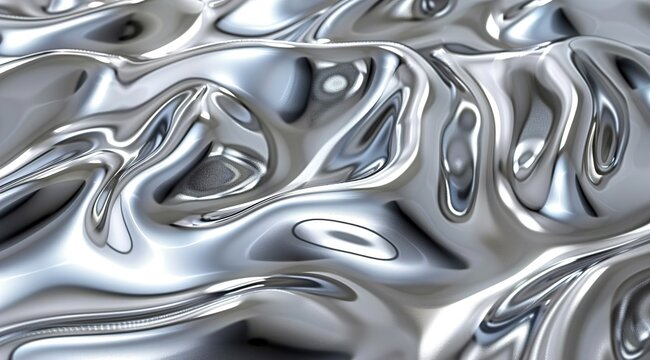
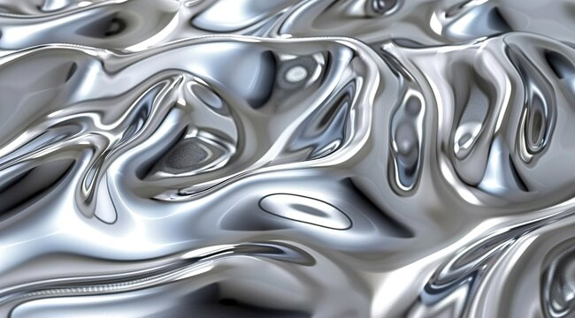

The History of Silver
The color "silver" directly derives its history from the precious metal silver itself, which has been used for millennia in jewelry, currency, and decorative arts due to its lustrous finish and relative rarity; the color name only started being used in English around 1481, essentially mirroring the metal's long-standing cultural significance, where it often symbolized purity, wealth, and divinity across various civilizations like the Egyptians, Greeks, and Romans who utilized silver extensively in their art and artifacts.
Silver mining began thousands of years ago, with early civilizations like the Minoans and Mycenaeans importing large quantities of silver from regions like ancient Armenia.In many cultures, silver represented purity, virtue, and even divine qualities due to its reflective nature, often used in religious art and illuminated manuscripts.The word "silver" originates from the Anglo-Saxon word "seolfor" which signifies "shiny and white".
While gold pigments were more prevalent in early art, the Renaissance saw a growing interest in depicting the color silver in paintings, especially as a way to represent metallic surfaces. With the rise of industrial design, silver became associated with sleek, modern aesthetics, appearing in automobiles, electronics, and aerospace, symbolizing speed and technology.
Silver Gallery
Silver is a metallic color that resembles gray and is inspired by the polished metal of the same name. It's often associated with wealth, maturity, and grace. In color psychology, silver's reflective nature can inspire a sense of space and openness. Silver can also invoke feelings of calmness and balance, similar to its elemental counterpart, gray, but with a more lively and energizing presence due to its metallic sheen.
Google Search for Silver Images
 
